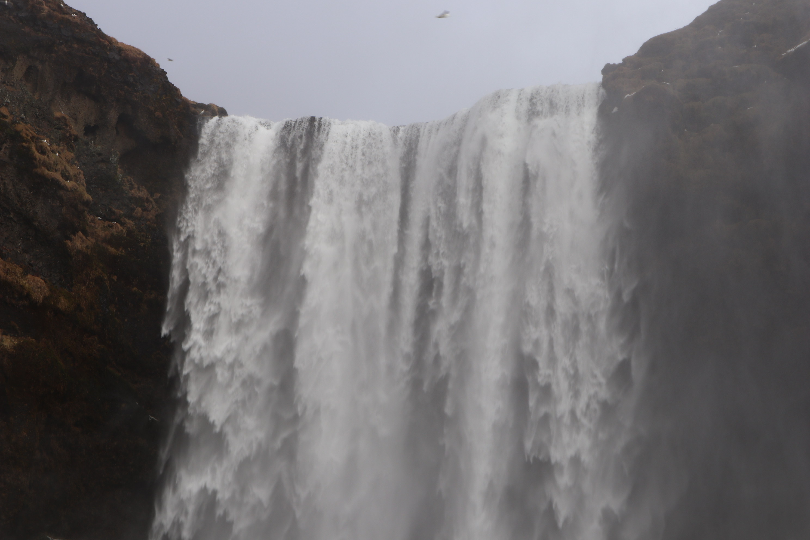
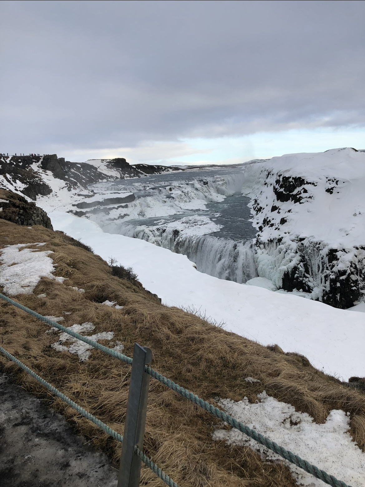

Top 5 Travel Destinations for 2025
Read Time: 10 Minutes
1. Reykjavík, Iceland
Reykjavík, the capital and largest city of Iceland, offers an otherworldly experience with its combination of striking natural wonders and a rich cultural scene. Located on the edge of the Arctic, Reykjavík serves as the perfect base for exploring Iceland’s iconic natural attractions, such as the Northern Lights, volcanoes, glaciers, and geysers. One of the city’s most famous landmarks, the Hallgrímskirkja Church, towers over the skyline, providing panoramic views of the surrounding landscapes, including Mount Esja and Faxaflói Bay.
"A picture I took at Gullfoss waterfall in Feb 2019" - Fylvia
The Blue Lagoon, a geothermal spa located just outside the city, offers a chance to unwind in warm, mineral-rich waters surrounded by rugged lava fields. The city’s proximity to the Golden Circle means you can easily visit Þingvellir National Park, the Gullfoss waterfall, and the Geysir geothermal area, all within a day trip.
Reykjavík is not just about nature; it has a thriving arts and music scene. Visitors can explore the Reykjavík Art Museum or catch live music at intimate venues that showcase local and international talent. Iceland’s literary heritage is celebrated throughout the city, with several bookstores and cozy cafes ideal for diving into a book.
Food lovers will also enjoy Reykjavík’s culinary offerings, ranging from traditional Icelandic dishes like lamb and seafood to innovative, modern cuisine. The city’s harbor area has recently transformed into a hub for trendy restaurants and bars. Overall, Reykjavík offers a unique combination of natural beauty, artistic expression, and rich history, making it a must-visit for any traveler looking to explore the wild beauty of Iceland.